Achievements
Our competition record
Since 2023 the group has sent a team to the DIRISA Student Datathon nationals every year, and our members have twice been the South African winners of the IBM Z Datathon.
DIRISA Student Datathon Challenge
Each team has a technical group and a research group, guided by a mentor. About the competition
No Data Left Behind
- 2nd position, qualifiers
- Nationals: 6 to 11 December, Stellenbosch University
technical_team
- Jedidiah Kanju
- Kaitlin Muruvan
- Shaylin Indurjeeth
- Lesedi Kgwefane
research_team
- Siyabonga Nhlapo
- Atlehang Manake
mentor
- Palesa Rapolaki
Nationals result to be confirmed. Team photos and the final placing will be added after the finals.
AnalytIQ
- 2nd place, Technical Challenge
- 3rd place, Research Challenge
- 1st position, qualifiers
technical_team
- Sharlene Moetjie
- Theto Maunatlala
- Raeesa Lorgat
- Viasha Morgan
research_team
- Mpho Murashiwa
- Gwen Molekwa
mentor
- Palesa Rapolaki

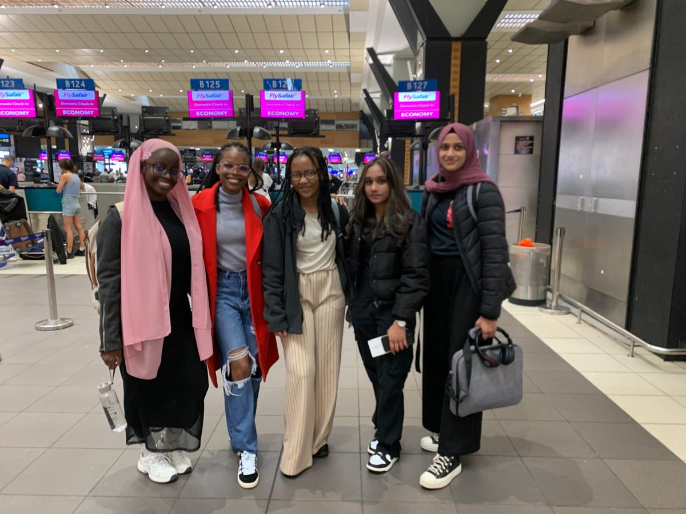
Travelling to nationalst0
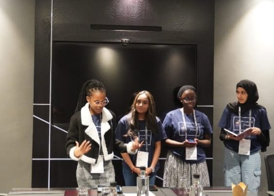
At the finals venuet1
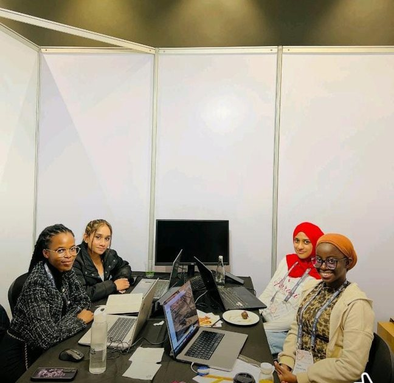
Technical team at workt2
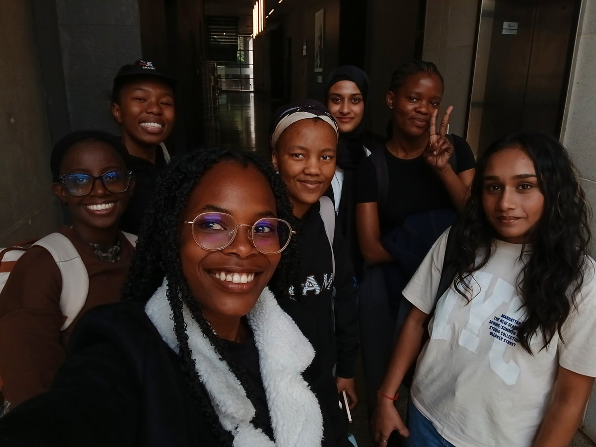
The team with their mentort3
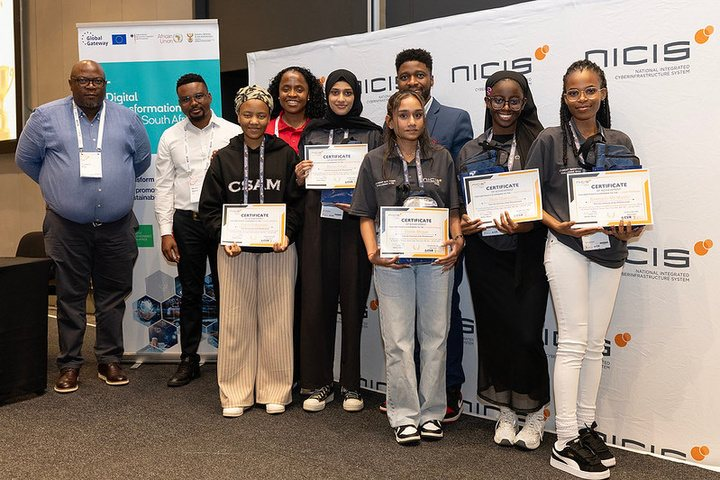
Prize-givingt4
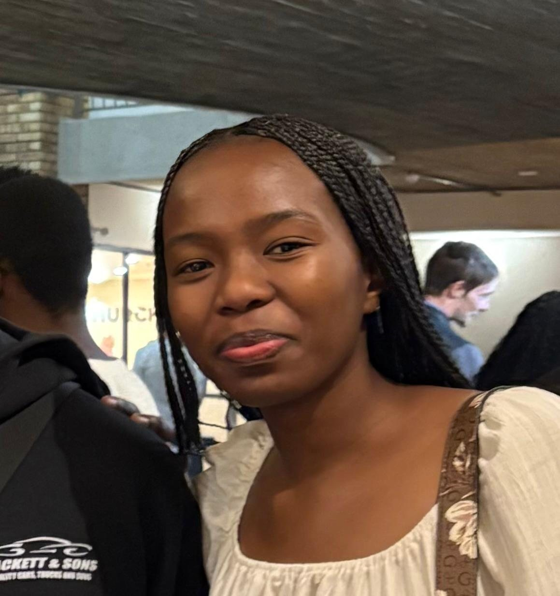
Mpho Murashiwa
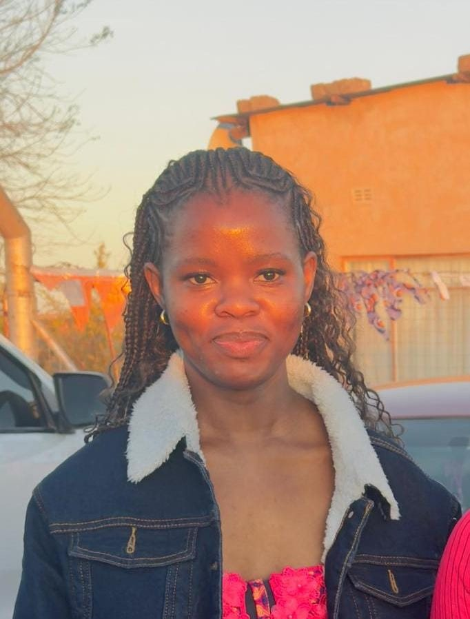
Gwen MolekwaByte Busters
- 1st place, Technical Challenge
- 1st position, qualifiers
Sponsor award. Joash Paul won an internship with Alton, one of the DIRISA sponsors.
technical_team
- Joash Paul
- Mixo Khoza
- Tamara Zelenyuk
- Goitseona Sono
research_team
- Keren Chetty
- Amarachukwu Onwenu
mentor
- Lungile Mngonyama

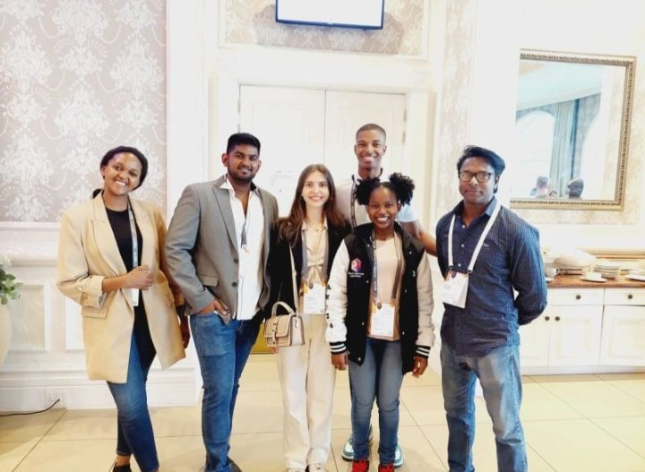
At the finalst0
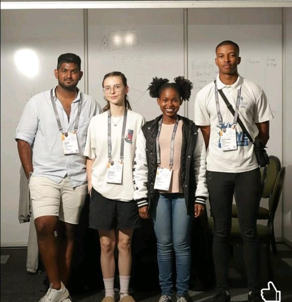
Technical teamt1
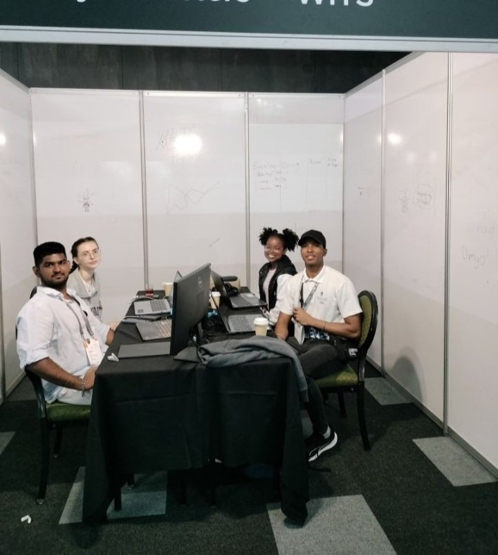
At the team bootht2
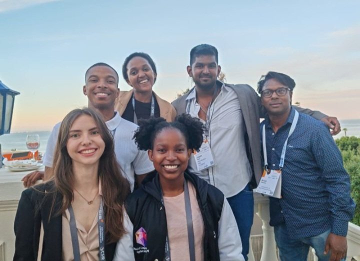
The team at nationalst3
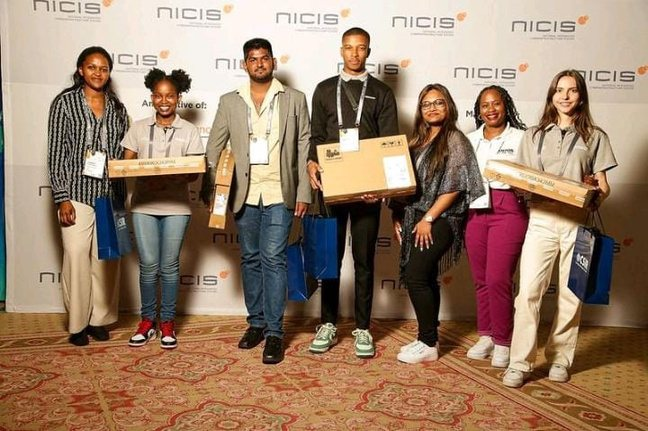
Prize-givingt4
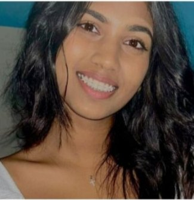
Keren Chetty
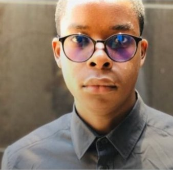
Amarachukwu OnwenuData Wizards
- 3rd place, Technical Challenge
technical_team
- Claire Stewart
- MoreBlessing Semela
- Oneilwe Seleke
- Palesa Rapolaki
research_team
- Muhammed Bangie
- Mahdiyyah Jhetam
mentor
- Lungile Mngonyama

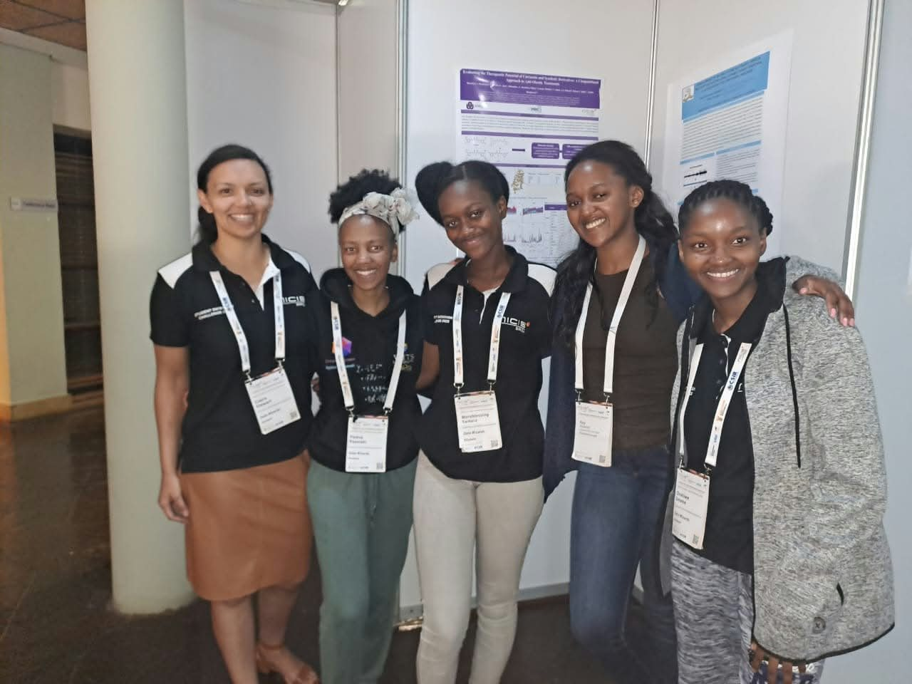
At the datathont0
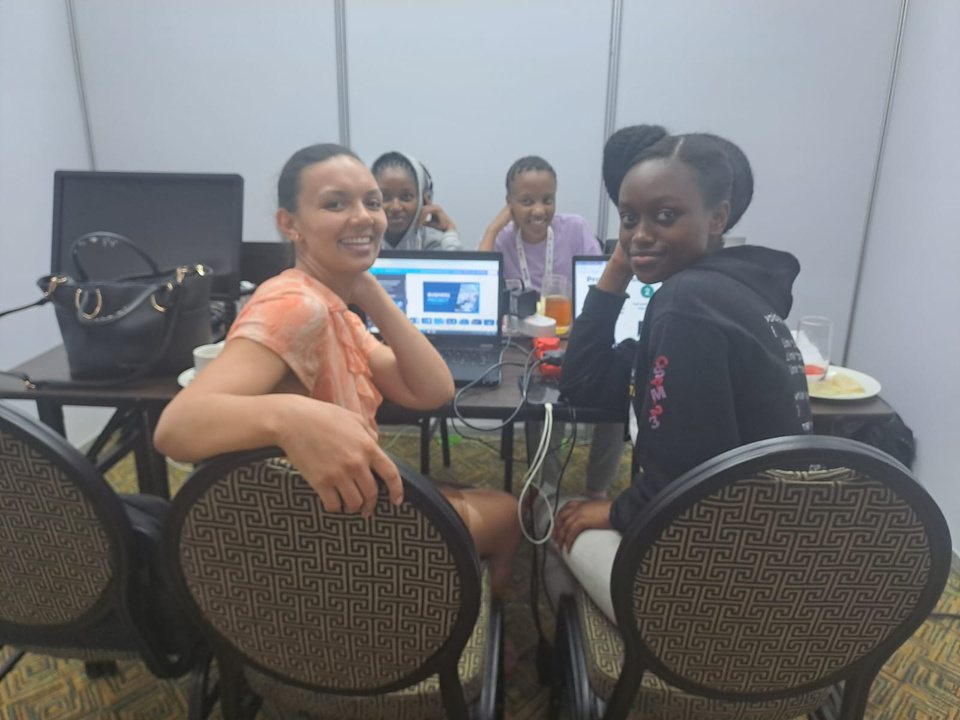
Technical team at workt1
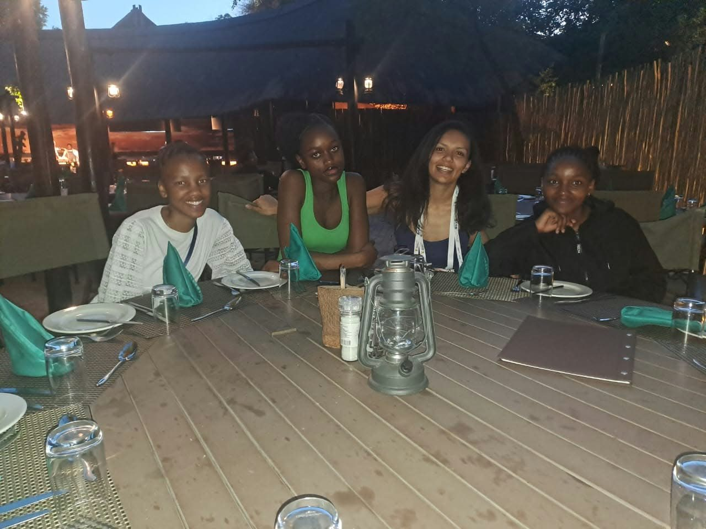
Team dinnert2
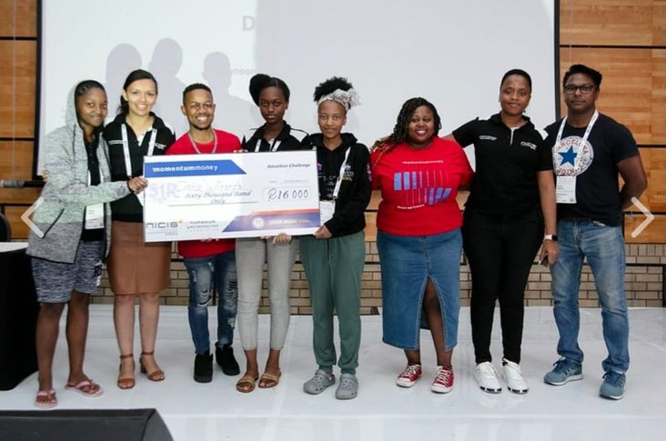
Prize-givingt3
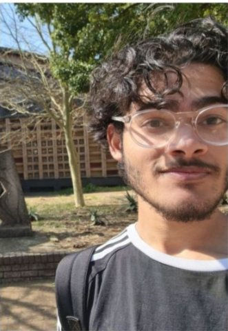
Muhammed Bangie
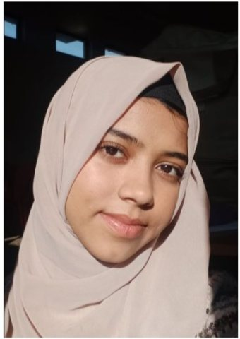
Mahdiyyah JhetamIBM Z Datathon
South African winners, two years running. A social-good datathon run as an in-person national competition. About the competition
IBM Z Datathon 2025
- South African winners
team
- Viasha Morgan
- Theto Maunatlala
- Gwen Molekwa
- Mpho Murashiwa


IBM Z Datathon 2024
- South African winners
team
- Mixo Khoza
- Goitseona Sono
- Amarachukwu Onwenu
- Daniel Ngobe

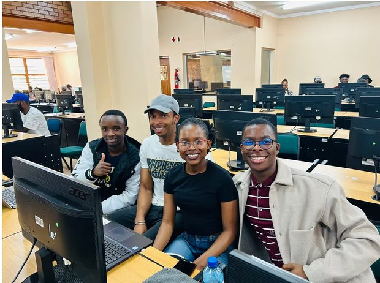
The 2024 team